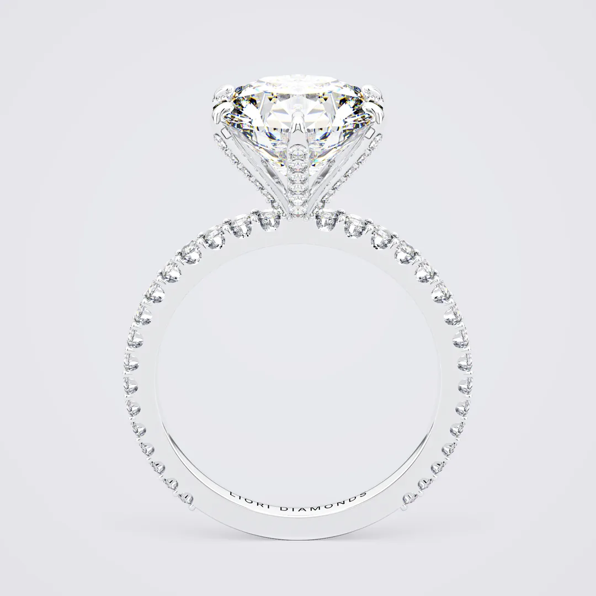
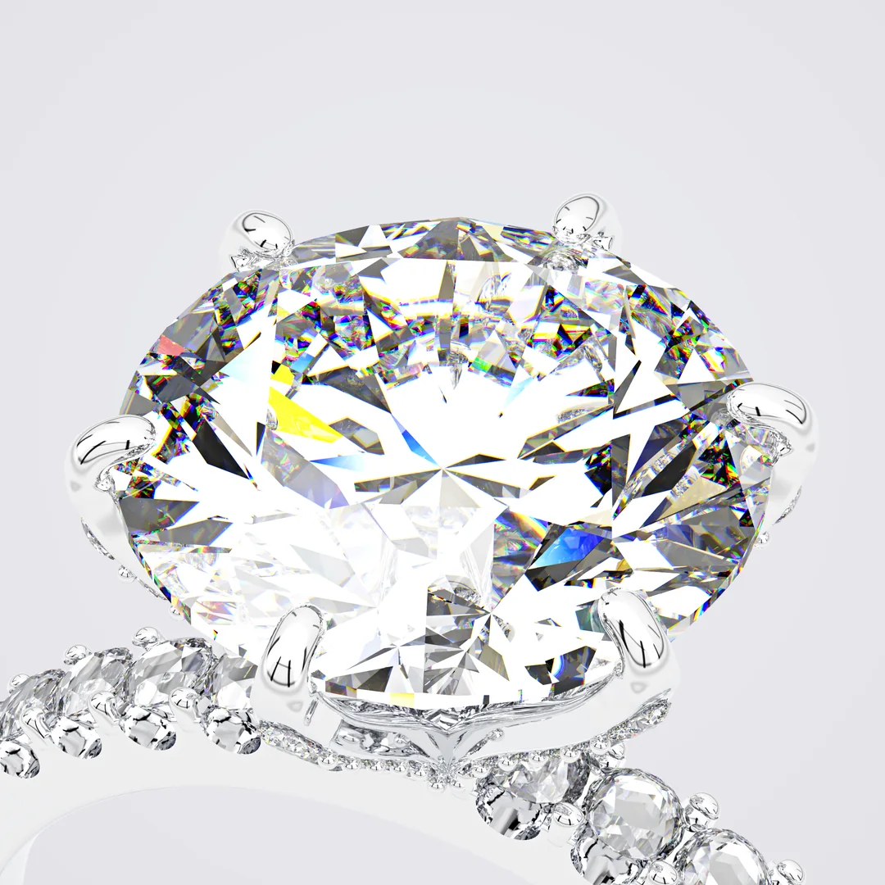
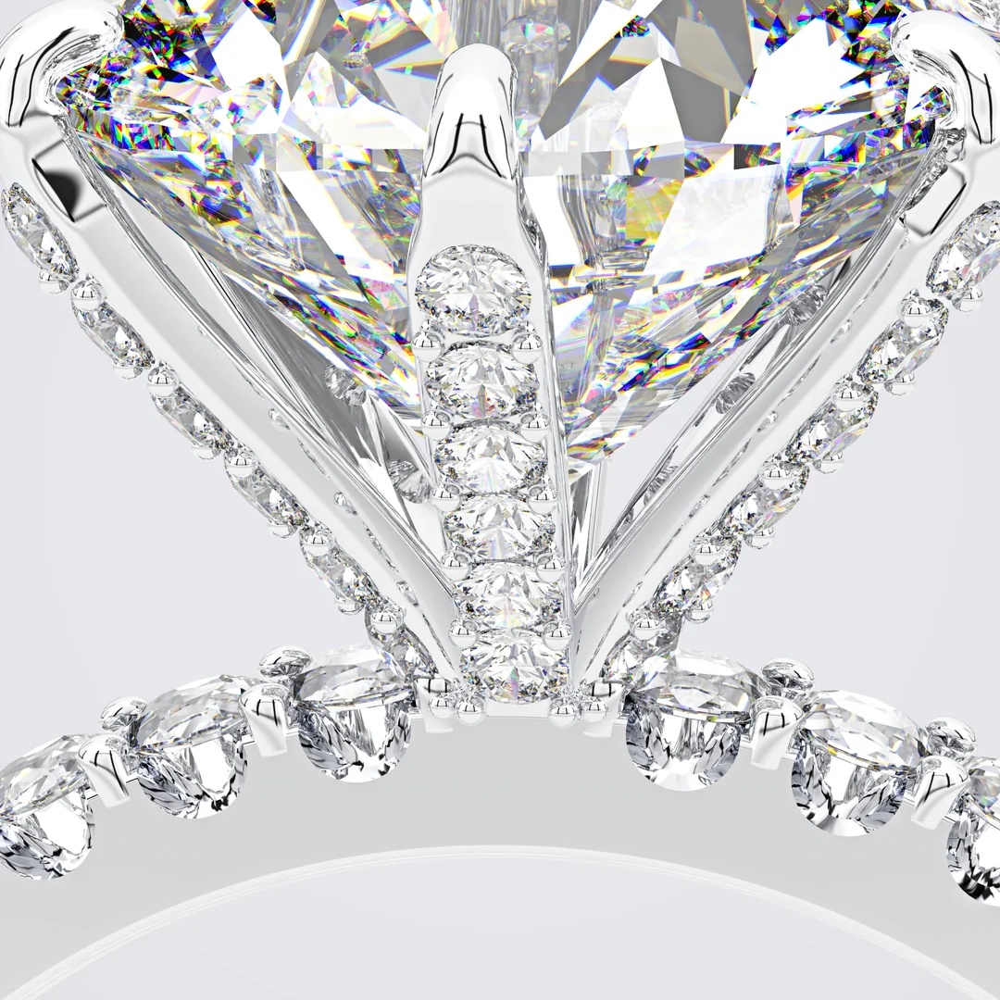
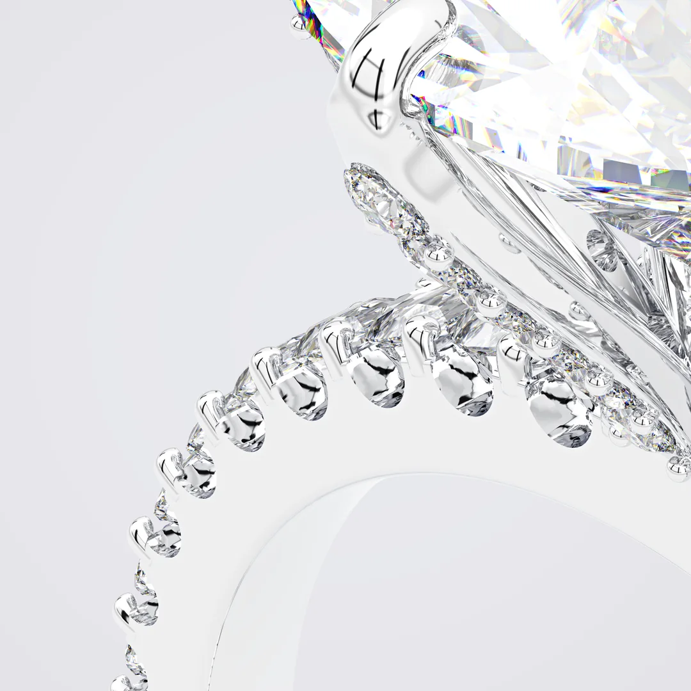
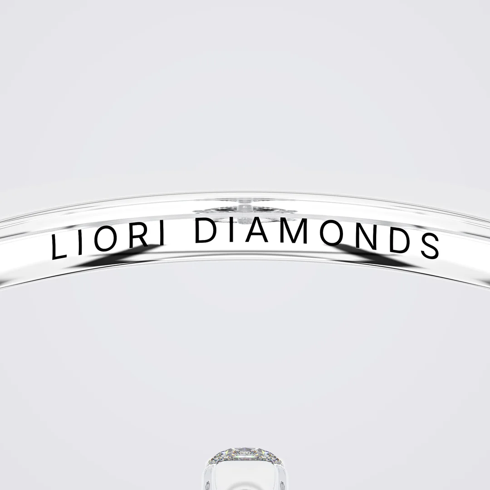

A procedural 3D rebuild of the ring, rendered in Blender 5.2 with Cycles. Every stone is a 57-facet round brilliant with spectral dispersion; every bead, scallop and the engraving inside the shank is modelled, not painted.
Macro renders at 2200 px. This is the scale where a jeweller judges a setting: bead by bead, scallop by scallop.




Left: the current product renders. Right: this study, at a matching angle and on the same white background.
| Criterion | Result | Why |
|---|